Référence de production
Ces sheets verrouillent proportions, fonctions et interdits graphiques. Les images conceptuelles originales restent dans le dossier source Drive ; ces planches schématiques servent au contrôle systématique.

CILLO

SIDAAT
Verrous absolus
SOYA reste l’héroïne. Aucun double de SOYA. CILLO : aucune retombée sous la nuque. SIDAAT reste nettement plus jeune. Le boa n’est jamais frontal, agressif ni captif.